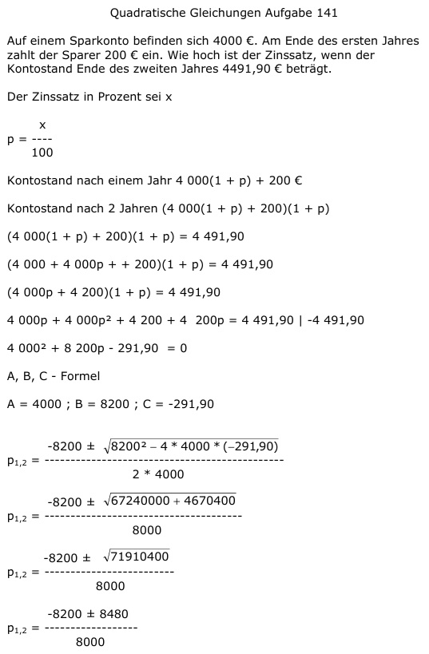

Aufgabe 141 Auf einem Sparkonto befinden sich 4000 €. Am Ende des ersten Jahres zahlt der Sparer 200 € ein. Wie hoch ist der Zinssatz, wenn der Kontostand Ende des zweiten Jahres 4491,90 € beträgt. Der Zinssatz in Prozent sei x x p = ----- 100 Kontostand nach einem Jahr 4 000(1 + p) + 200 € Kontostand nach 2 Jahren (4 000(1 + p) + 200)(1 + p) (4 000(1 + p) + 200)(1 + p) = 4 491,90 (4 000 + 4 000p + + 200)(1 + p) = 4 491,90 (4 000p + 4 200)(1 + p) = 4 491,90 4 000p + 4 000p2 + 4 200 + 4 200p = = 4 491,90 |-4 491,90 4 0002 + 8 200p - 291,90 = 0 A, B, C - Formel A = 4000 ; B = 8200 ; C = -291,90  -8200 ± 8480 p1,2 = ----------------- 8000 -8200 + 8480 280 p1 = -------------- = ------ = 0,035 --> p = 3,5% 8000 8000 -8200 - 8480 -16680 p2 = --------------- = -------- = -2,085 8000 8000 keine Lösung, negativer Zinssatz